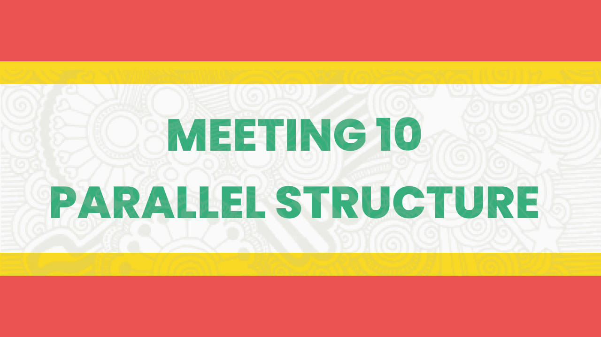

Video Presentation
Meeting 3 AFFIXATIONS

Video Presentation
Meeting 10 PARALLEL STRUCTURE
MEETING 3
AFFIXATIONS
In English grammar and morphology, an affix is a word element that can be attached to a base or root to form a new word or new form of the word, usually occurring as either a prefix or suffix. Put simply, an affix is a group of letters that are generally added to the beginning or the end of a root word that can change the word's meaning.
As their names would entail, prefixes like pre-, re-, and trans- are attached to the beginnings of words such as predict, reactivate, and transaction, while suffixes like -ism, -ate, and -ish are attached to the ends of words such as socialism, eradicate, and childish. In rare cases, an affix may be added to the middle of a word and is therefore called an infix, which occurs in such words as cupsful and passersby, where the additional "-s-" affix pluralizes the words cupful and passerby, thus changing their form.
What is a Prefix?
A prefix is a letter or group of letters attached to the beginning of a word that partly indicates its meaning, including such as examples as "anti-" to mean against, "co-" to mean with, "mis-" to mean wrong or bad, and "trans-" to mean across.
The most common prefixes in English are those that express negation like "a-" in the word asexual, "in-" in the word incapable, and "un-" in the word unhappy. These negations immediately alter the meaning of the words they are added to, but some prefixes merely change the form. The word prefix itself contains the prefix pre-, which means before, and the root word fix, which means to fasten or place. Thus, the word itself means "to place before."
Prefixes are bound morphemes, which means they can't stand alone. Generally, if a group of letters is a prefix, it can't also be a word. However, prefixation, or the process of adding a prefix to a word, is a common way of forming new words in English.
What is a Suffix?
A suffix is a letter or group of letters added to the end of a word or root—its base form—serving to form a new word or functioning as an inflectional ending. The word suffix comes from the Latin, "to fasten underneath."
There are two primary types of suffixes in English:
- Derivational, such as the addition of "-ly" to an adjective to form an adverb, indicating what type of word it is. -
- Inflectional, such as the addition of "-s" to a noun to form a plural telling something about the word's grammatical behavior.
Difference Between Affixes and Compound Words
Affixes are bound morphemes, which means that they can't stand alone. If a group of letters is an affix, it usually can't also be a word. However, Michael Quinion's 2002 book, "Ologies and Isms: Word Beginnings and Endings," explains the importance of these affixes to the English language and its ever-evolving usage.
Although quite similar to compounds—which combine two words with separate meanings to form a new word with a new meaning— affixes must be attached to other words in order to have meaning in and of themselves, says Quinion.
Still, affixes can often be stacked together in clusters to create complex words much more easily than compounds can, as David Crystal explains in his 2006 book, "How Language Works." He uses the example of nation, which can become national as well as nationalize, nationalization, or denationalization.
MEETING 5
WORD CHOICE
WORD CHOICE
Choose your words carefully., and pay attention to the way words are used in the texts you read. The following points are some strategies and examples to guide you in choosing your words wisely.
General Advice
1. Turn off “Auto-Correct” on your computer’s Word program.Example with Error: This particle symptom was especially painful for the patient.
2. Use an English-English dictionary to check the meaning of the word you are using, especially the first time.Google Translator sometimes produces strange results.
3. Paraphrase correctly.Word choice errors are often the result of trouble with paraphrasing. Be careful with synonym replacements because no two words in English mean exactly the same thing.
Specific Advice
4. Choose specific words that describe exactly what you mean.They do not contribute to your ideas or meaning. You can usually just cross out the word, but sometimes you may need to find another more specific word.
Example with Error: This leadership style can hinder rapid decision making in very urgent situations.
Example with Error: Choosing to cover or hide a medication error is totally wrong in nursing practice.
Example with Correction: Choosing to cover or hide a medication error is unacceptable in nursing
practice.
Referring to a person as “a diabetic” or to a group as “the elderly” places importance on a condition and removes individuality. Instead of “a diabetic patient,” use “a patient with diabetes.” Instead of “the elderly,” use “older adults.” Refer to your course materials to find the academic language used to describe people or populations.
6. Beware of the pronouns this, these, or it.They are often used to refer back to an idea in a previous sentence, but the idea (or word) to which they refer could be unclear to your reader.
7. Some actions can only be done by humans! Examples of Errors: This paper will talk about..... .... The research tried to ask....
However, you can say, “The research indicated that...” or “... showed that...”
Instead of kids, use children. Instead of two-word verbs such as got up, use one word verbs such as rose or stood.
9. Short words are easier to understand than long ones.Do not use the word utilize if the word use will do.
MEETING 10
PARALLEL STRUCTURE
LESSON
Parallel structure, or parallelism, means using the samepattern of words to show that two or more words or ideas are of equal importance. An example of parallelism is 'of the people, by the people, for the people’ by Abraham Lincoln from his speech in Gettysburg Address. This expression has echoed through the ages and is powerful because it uses the parallel structure.
Now let‘s proceed to other grammatical forms that help achieve parallelism; these are the verbals, gerund, and infinitive.
What is a Gerund?
A gerund is a noun formed from a verb. A gerund contains the ending -ing. It will always be used as a noun and does not replace the progressive form of the verb.
Let us try some examples.
1. read/reading
I read every day. / I like reading.
In the first sentence, 'read' is used as a verb. I am doing the action to read. In the second sentence, 'reading‘ is used as a gerund (noun), and ‘like’ is the verb.
2. draw/drawing
Crizea draws. / Drawing makes Crizea happy.
In the first sentence, ‘draws’ is used as a verb. Crizea is doing the action to draw. In the second sentence, 'drawing' is used as a gerund and ‘makes’ is the verb.
What is an Infinitive?
An infinitive is a verbal form consisting of the word to plus a verb and functioning as a noun, adjective, or adverb. The term verbal indicates that an infinitive, like the other two kinds of verbals, is based on a verb and therefore expresses action or a state of being. An infinitive is easy to locate because of the to + verb form. Here are some examples:
| Verb | Infinitive (to + verb) | Sentence |
|---|---|---|
| Go | to + go | Ana needs to go to the grocery. |
| Read | Go + Read | Grace loves to read books. |
| Learn | Go + Learn | The baby wants to learn how to walk. |
Video Presentation
Meeting 3 AFFIXATIONS
Video Presentation
Meeting 10 PARALLEL STRUCTURE